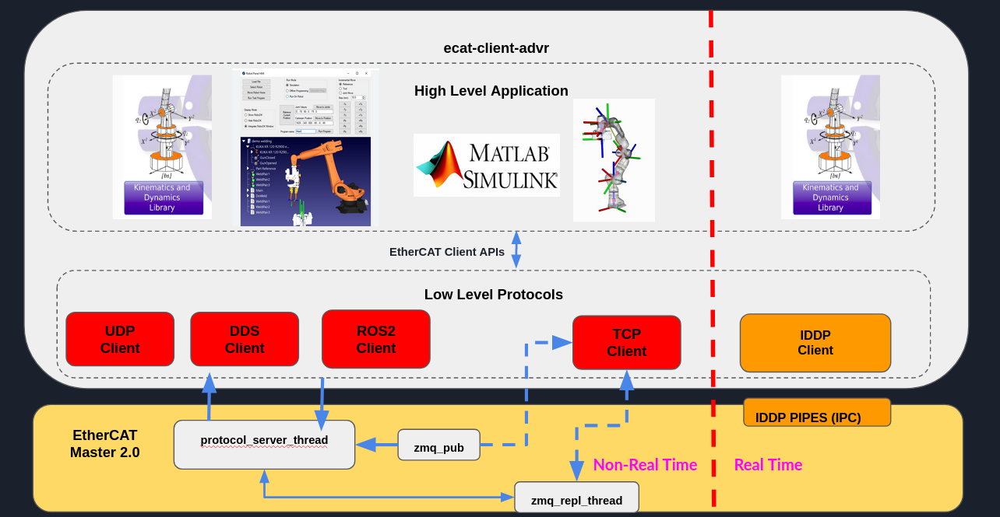
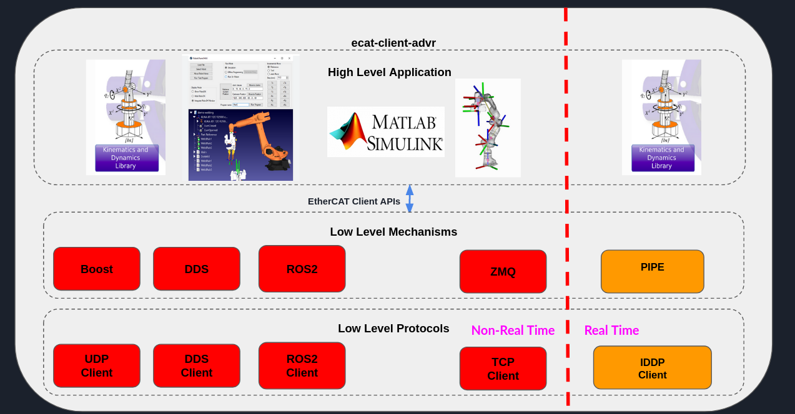
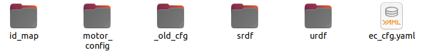

EtherCAT Client
EtherCAT Client Architecture


Code documentation
It’s possible to generate the doxygen documentation to read the code of the EtherCAT client:
doxygen Doxyfile
Slave Configuration files
The suggestion is to create a directory with this sub-directories:

joint_config: Here it’s possible to save different slaves configuration files.
joint_map: File of the slave map (id—>name).
“robot_file”: This is an optional file where there are the links to urdf,srdf, model_type and is_model_floating_base information. If this file is present and the user wants to use it, it’s better to save the main directory into a workspace where it’s possible to find the urdf and srdf.